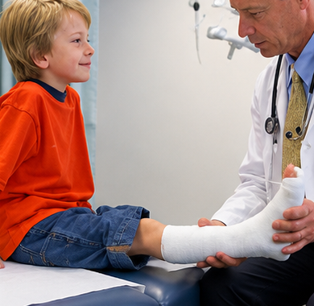
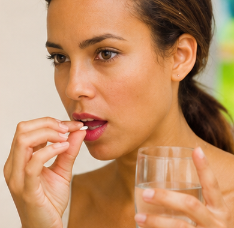
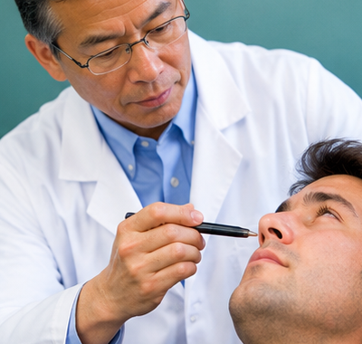
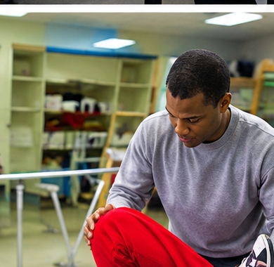
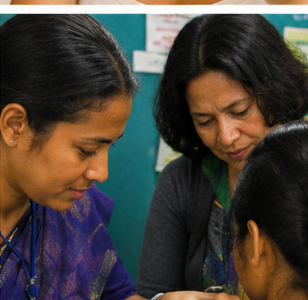
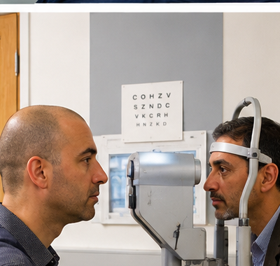

Wordlist — Medical Treatment
These words come up throughout today's tasks on treatments, medicine, and recovery.
| word / phrase | meaning | example | common collocations |
|---|---|---|---|
| prognosis | a doctor's forecast of how a disease or condition will develop | The prognosis for early-stage cases is generally very good. | a good/poor prognosis |
| chronic | persisting for a long time; long-lasting | Chronic back pain affects millions of people worldwide. | a chronic condition/illness |
| remedy | a treatment or medicine for an illness or injury | There's no simple remedy for the common cold. | a home/natural remedy |
| intervention | action taken to improve a medical or health situation | Early intervention can significantly improve recovery outcomes. | early/medical intervention |
| rehabilitation | the process of restoring someone to health after illness or injury | Rehabilitation after surgery can take several months. | undergo rehabilitation |
| debilitating | causing severe weakness or a loss of strength | The condition can become debilitating if left untreated. | a debilitating illness/injury |
| holistic | treating the whole person, not just the symptoms of an illness | Holistic medicine focuses on the whole person, not just the illness. | a holistic approach |
| preventive | designed to stop something, especially illness, from happening | Preventive care can reduce the risk of serious illness later in life. | preventive care/medicine |
| outpatient | a patient who receives treatment without staying overnight in hospital | She was treated as an outpatient and sent home the same day. | an outpatient clinic/appointment |
| inflammation | swelling and redness in a part of the body, caused by injury or infection | Inflammation is the body's natural response to injury. | reduce inflammation |
Complete the sentences with words from the table.
1. Doctors gave the patient a positive after the operation.
2. Arthritis is a condition that can last a lifetime.
3. Ginger tea is a popular home for nausea.
4. Without early , the condition can quickly get worse.
5. After the accident, she spent months in to regain full movement.
6. If left untreated, the illness can become genuinely .
7. Rather than treating just the symptom, her doctor took a more approach.
8. Regular check-ups are an important part of healthcare.
9. The procedure was minor enough that she was treated as an .
10. The swelling around the joint was a clear sign of .
Match each word to its definition.
1. prognosis —
2. debilitating —
3. holistic —
4. outpatient —
5. inflammation —
B a doctor's forecast of how a disease will develop
C a patient treated without staying overnight in hospital
D treating the whole person, not just the symptoms
E swelling and redness caused by injury or infection
Read this short text. All ten words from the table are highlighted.
When a patient first arrives with symptoms, a doctor's initial goal is simply to understand what's wrong before offering any prognosis. Some conditions are short-lived, while others are chronic, meaning they may never fully disappear. For minor complaints, a simple remedy might be enough, but more serious cases call for proper medical intervention. Recovery doesn't always end with treatment either — many patients go on to spend weeks or months in rehabilitation, especially after an injury that would otherwise remain debilitating. Increasingly, doctors are encouraged to take a holistic view of a patient's health rather than focusing narrowly on one symptom, and to emphasise preventive care wherever possible. Many procedures today don't even require a hospital stay: patients are treated as an outpatient and sent home the same day. And even something as ordinary as swelling — medically known as inflammation — turns out to be the body's own way of starting the healing process.
Now test yourself — choose the word that best fits each sentence.
1. Since the illness never fully clears up and keeps recurring for years, doctors describe it as ___.
2. Catching a disease early, before it develops further, is a form of ___ care.
3. After breaking her leg, she needed months of ___ before she could walk normally again.
4. The surgeon offered a positive ___, expecting a full recovery within weeks.
5. Rather than treat just her back pain, the specialist looked at her diet, sleep, and stress too — a genuinely ___ approach.
Medical Treatments
Match each photo to the phrase that describes it.






Now match each photo to what it illustrates.
A (cast on leg) —
B (taking a pill) —
C (face examination) —
D (physiotherapy) —
E (injection) —
F (eye exam) —
ii large-scale preventative medical treatment
iii the use of medication to alleviate pain
iv the treatment of a muscle injury
v treatment following an accident in the playground
vi a routine check-up
Now describe each photo in at least 50 words.
Use both phrases you matched to this photo in your sentence. The first one is done for you as an example.
Example:
The boy is having a plaster cast put on his leg to set a broken bone. These injuries are typical for children of his age and usually take place as a treatment following an accident in the playground. Fortunately, most childhood fractures like this one heal quickly, and a full recovery is expected within a matter of weeks.
Speaking Part 1 — Health and Medicine
Answer each question naturally. You only get one attempt per question, so make sure you're ready before you start recording.
Podcast — Mushrooms: Medicine or Myth?
Listen to the podcast, then answer the questions below.
Part 1 — Choose the best answer.
1. What was the global medicinal mushroom market valued at in 2021?
2. According to Dr. Emily Leeming, how solid is the current evidence for mushrooms' benefits in humans?
3. Why do some consumers — especially young people — feel drawn to medicinal mushrooms despite a lack of scientific proof?
4. Which fun fact about mushrooms was confirmed during the program?
5. Why does Dr. Leeming describe health claims about mushrooms as "overblown"?
Part 2 — Fill in each blank with the most appropriate word or phrase from the box.
having a moment · claim · overblown · ancient wisdom · give it a go · intrigued
1. Lion's Mane and Turkey Tail mushrooms are currently because they have become extremely popular and fashionable.
2. The assertion that a mushroom drink can instantly cure anxiety is just an unproven .
3. Many health claims made on product labels are and exaggerate the actual science.
4. Herbal remedies often rely on passed down through generations before modern science existed.
5. Young consumers are by mysterious natural ingredients and are eager to to see if they like them.
Part 3 — Match each word or phrase with its definition.
1. Having a moment —
2. Claim —
3. Overblown —
4. Ancient wisdom —
5. Give (something) a go —
6. Intrigued —
B Knowledge, philosophy, and beliefs from pre-Christian times.
C To try doing something new or unusual to see if you like it.
D Being temporarily popular or fashionable right now.
E A statement that something is true, though it cannot be proved.
F Very interested in something unusual or mysterious and wanting to know more.
Choose the best vocabulary word to complete each sentence.
7. Bioluminescent fungi are unique because they:
8. A person who is sceptical about health trends:
9. If a seller markets a product as a "super brain drug", they are suggesting it will improve:
10. Holistic medicine focuses on:
Listening Section 3
Listen to the first part.
Questions 1–5 — What comments do the speakers make about each treatment or service?
Choose FIVE answers from the box.
1. Manual therapy —
2. Stability training —
3. Electrotherapy —
4. Video analysis —
5. Workstation analysis —
B It is the most popular.
C It requires special sportswear.
D It is the most effective.
E It is best done in the evening.
F It is rarely used.
Listen to the second part.
Questions 6–10 — Complete the flow chart below.
Write NO MORE THAN TWO WORDS for each answer.
Example of patient route:
6. Arrives at clinic with an .
7. Physiotherapist evaluates to ankle.
8. Treatment is given, and an is prepared.
9. Return trips are made to check joint .
10. A supervises activity in the gym.
Vocabulary — Evaluating Health Claims
Complete each collocation with the correct word.
1. the industry (companies selling health/lifestyle products)
2. scientific (proof gathered through research)
3. a dietary (a pill or product added to one's diet)
4. evidence (based on personal stories rather than research)
5. a source (one that can reasonably be trusted)
6. the effect (improvement caused by belief, not the treatment itself)
True or false?
1. Anecdotal evidence is generally considered as reliable as a controlled scientific study.
2. A credible source is one that can reasonably be trusted.
3. The placebo effect means a treatment only works because of its real, active ingredients.
4. A dietary supplement is a food or pill added to someone's regular diet.
Video — How Stress Affects the Body
Watch the video, then complete the three parts below.
Part 1 — Choose the best answer.
1. According to the video, what can happen when the stress response is activated too often or for too long?
2. What effect does adrenaline have on the body?
3. How can chronic stress affect the digestive system?
4. Why can chronic stress contribute to weight gain?
5. What does the video suggest about how people should respond to stressful situations?
Part 2 — Fill in each blank with the correct word from the box.
cortisol · hypertension · digestion · immune · telomeres
1. The adrenal gland releases several stress hormones, including and adrenaline.
2. Long-term high blood pressure is known as .
3. Stress can affect the gut and may influence a person's and overall health.
4. Chronic stress can reduce the effectiveness of some cells, making people more susceptible to infections.
5. are the protective ends of chromosomes that become shorter as cells divide.
Part 3 — Match each word or phrase with its definition.
1. overwhelmed —
2. advantageous —
3. bloodstream —
4. hypertension —
5. atherosclerosis —
6. visceral fat —
7. immune system —
8. susceptible —
9. digestion —
10. insurmountable —
B The body's ability to protect itself from disease
C Helpful or beneficial in a particular situation
D Unable to cope because there is too much to deal with
E The fluid system through which substances are transported around the body
F The process by which the body breaks down and uses food
G Fat stored deep inside the abdomen around internal organs
H A condition involving the buildup of plaque in the arteries
I More likely to be affected by or harmed by something
J Too difficult to overcome or deal with